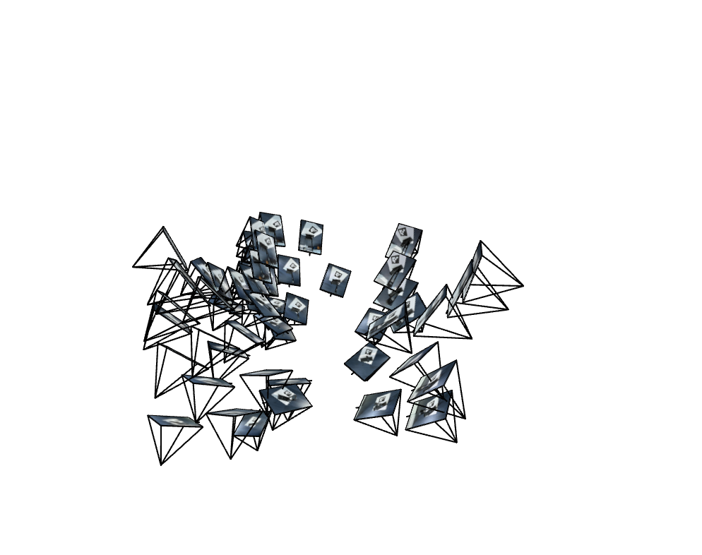
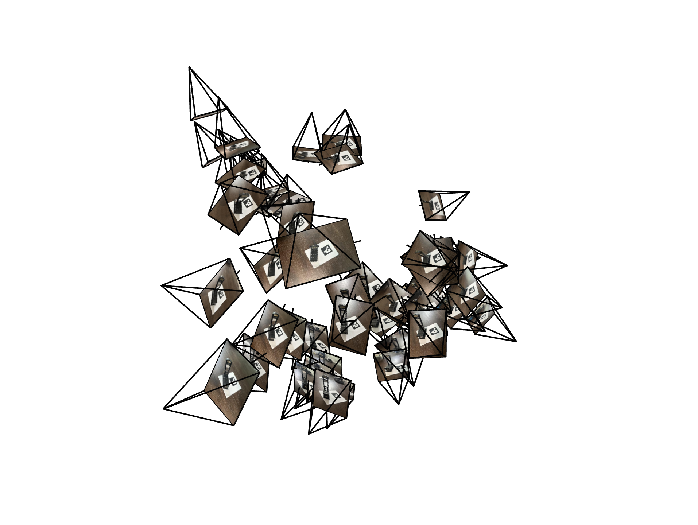

Project Overview
This project implemented Neural Radiance Fields (NeRF) for new view synthesis by training neural networks to reconstruct 3D scenes from multi-view images. The implementation includes camera calibration, pose estimation, ray generation, volume rendering, and neural field optimization from scratch using PyTorch.
Part 0: Camera Calibration and 3D Scanning
Camera Calibration Pipeline
Camera calibration implementation using ArUco tags to compute intrinsic parameters and distortion coefficients:
- Take 30-50 images of calibration tags from varying angles and distances
- Detected ArUco markers using OpenCV's detector with DICT_4X4_50 dictionary
- Extracted image coordinates and corresponding 3D world points
- Used cv2.calibrateCamera() to compute camera matrix and distortion coefficients
During dataset preparation, I discovered that image resizing significantly impacts camera intrinsic parameters and reprojection accuracy. For the Lafufu dataset, resizing images to 300 pixels in height resulted in several calibration issues:
- High Reprojection Error: Approximately 0.5 pixels, shows poor calibration accuracy
- Focal Length Discrepancy: Significant difference between fx and fy values, suggesting the aspect ratio distortion
- Incorrect Camera Pose Estimation: Camera position calculations were inaccurate due to improper intrinsic parameters
3D Object Scanning
Captured a custom object (Guillotine) with 50 images from different viewpoints:
- Set the printed ArUco tag as world coordinate origin
- Used the same camera and zoom level as the calibration image camera
Camera Pose Estimation
Estimated camera extrinsics using Perspective-n-Point (PnP) solving:
# Detect ArUco markers
corners, ids, _ = aruco_detector.detectMarkers(gray)
# Solve Perspective-n-Point
success, rvec, tvec = cv2.solvePnP(
object_points, image_points,
camera_matrix, dist_coeffs
)
# Convert to camera-to-world matrix
R, _ = cv2.Rodrigues(rvec)
c2w = np.linalg.inv(np.vstack([np.hstack([R, tvec]), [0, 0, 0, 1]]))
Camera Frustum Visualization


Dataset Preparation
Undistorted images and packaged dataset with train/val/test splits:
images_train=images_train, # (40, H, W, 3)
c2ws_train=c2ws_train, # (40, 4, 4)
images_val=images_val, # (5, H, W, 3)
c2ws_val=c2ws_val, # (5, 4, 4)
c2ws_test=c2ws_test, # (30, 4, 4)
focal=focal # 1380.5
)
Part 1: Fit a Neural Field to a 2D Image
Network Architecture
Implemented MLP with sinusoidal positional encoding for 2D image regression:

- Input: 2D coordinates (x, y) positional encoded to 26 dimensions
- Hidden layers: 4 layers, 256 neurons each
- Activation: ReLU
- Output: 3 channels (RGB) with Sigmoid
- Learning rate: 1e-2 with Adam optimizer
- Batch size: 10,000 pixels per batch
Positional Encoding Implementation
Sinusoidal encoding to map 2D coordinates to higher dimensions:
Encoding Dimensions
- Input dimension: d
- Output dimension: d × (2L + 1)
- Frequency levels: L = 10 for coordinates, L = 4 for view directions
encodings = [x]
for i in range(L):
for fn in [torch.sin, torch.cos]:
encodings.append(fn(2.0**i * x))
return torch.cat(encodings, dim=-1)
Training Progression - Test Image


PSNR Training Curve for Test Image
 PSNR vs Iterations
PSNR vs Iterations
Training Progression - Custom Image
 Iteration 0
Iteration 0
 Iteration 500
Iteration 500
 Iteration 1000
Iteration 1000
 Iteration 1500
Iteration 1500
 Iteration 2000
Iteration 2000
 Iteration 2500
Iteration 2500
 Iteration 3000
Iteration 3000
PSNR Training Curve for Custom Image
 PSNR vs Iterations
PSNR vs Iterations
Hyperparameter Analysis
 L=3, width=16
L=3, width=16
 L=3, width=256
L=3, width=256
 L=10, width=16
L=10, width=256
L=10, width=16
L=10, width=256
Hyperparameter Analysis
Part 2: Neural Radiance Field from Multi-view Images
Ray Generation Pipeline
Implemented coordinate transformations and ray sampling:
- Camera to World: Transform points using c2w matrix
- Pixel to Camera: Back-project using camera intrinsics
- Ray Construction: Origin at camera center, direction from pixel projection
- Ray Sampling: Random batch of 10,000 rays per iteration
Hyperparameter Analysis


Coordinate Transformation Code
# Camera origin in world coordinates
ray_o = c2w[:3, 3]
# Direction vector in camera coordinates
x_c = (uv[0] - K[0,2]) / K[0,0]
y_c = (uv[1] - K[1,2]) / K[1,0]
dir_c = np.array([x_c, y_c, 1.0])
# Transform to world coordinates
ray_d = c2w[:3, :3] @ dir_c
ray_d = ray_d / np.linalg.norm(ray_d)
return ray_o, ray_d
NeRF Architecture
Extended MLP for 3D radiance field prediction:
- Input: 3D coordinates (x, y, z) + view direction (θ, φ)
- Positional Encoding: L=10 for coordinates, L=4 for view
- Hidden layers: 8 layers, 256 neurons each
- Skip connection at layer 4
- Output: density (ReLU) + RGB color (Sigmoid)
- Learning rate: 5e-4, Adam optimizer

Volume Rendering Implementation
Discrete approximation of the volume rendering equation:
alpha = 1 - torch.exp(-sigmas * step_size)
T = torch.cumprod(1 - alpha + 1e-10, dim=1)
weights = T * alpha
rendered_rgb = torch.sum(weights * rgbs, dim=1)
return rendered_rgb
Lego Scene Training Progression
Rendered every 100 iteration on the validation set


Lego Scene Validation Result After Training (2500 iteration)
per-image PSNRs:
[25.36, 26.33, 24.87,
24.72, 25.69, 26.75, 27.00, 25.68,
25.15, 25.53]
mean PSNR: 25.713 dB


PSNR and Loss Curve


Ray Sampling Demonstration

N = 100, M =10 (100 rays from 10 images)
Novel View Synthesis - Lego
(NeRF model: 2500 Iteration, 10k rays/batch, 256 width, n = 64, m = 10)
Custom Object Training
Adapted NeRF for Labubu dataset with modified parameters:
- Near plane: 0.02 (was 2.0 for Lego)
- Far plane: 0.5 (was 6.0 for Lego)
- Samples per ray: 64 (increased from 32)
- Image resolution: 400x300 (resized from original)
- Adjusted intrinsics for resized images
Labubu Training Progression


Labubu Training Loss

Novel View Synthesis - Labubu


Bells & Whistles
Depth Map Rendering
Extended volume rendering to compute expected depth:
alpha = 1 - torch.exp(-sigmas * step_size)
T = torch.cumprod(1 - alpha + 1e-10, dim=1)
weights = T * alpha
depth = torch.sum(weights * t_vals, dim=1)
return depth


Hierarchical Sampling
Implemented coarse-to-fine sampling as in original NeRF paper:
- Coarse network: 64 samples with uniform spacing
- Fine network: 128 samples with importance sampling
- PDF resampling based on coarse network weights
- Improved fine details and reduced artifacts
Conclusion
This project successfully implemented a complete Neural Radiance Field pipeline from camera calibration to novel view synthesis. Key achievements include:
- Accurate camera calibration and pose estimation using ArUco markers
- Effective 2D neural field representation with positional encoding
- Full 3D NeRF implementation with volume rendering
- Successful training on both synthetic (Lego) and real (Labubu) datasets
- High-quality novel view synthesis with PSNR > 23 dB
The implementation demonstrates the power of neural networks for implicit 3D scene representation and view synthesis.